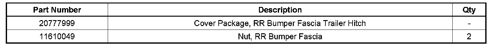
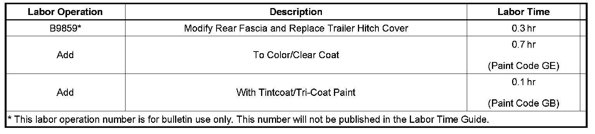

Body - Rear Bumper Trailer Hitch Cover Loose/Disengaged
TECHNICALBulletin No.: 08-08-62-003A
Date: November 20, 2008
Subject:
Rear Bumper Fascia Trailer Hitch Cover Loose or Disengaged (Replace Trailer Hitch Cover)
Models:
2007-2008 Cadillac Escalade, Escalade ESV
2007-2008 Chevrolet Tahoe LTZ
2007-2008 GMC Yukon Denali, Yukon XL Denali
Supercede:
This bulletin is being revised to provide a part number for the trailer hitch cover fastener. Please discard Corporate Bulletin Number 08-08-62-003 (Section 08 - Body & Accessories).
Condition
Some customers may comment that the trailer hitch cover is loose or has become disengaged from the top.
Correction
Replace the trailer hitch cover with a kit, P/N 20777999. The kit contains instructions, a template and a revised cover. Two holes will need to be drilled in the fascia to accept the new tabs on the inside of the new hitch cover. You will need to reuse the fasteners from the original cover. If they are missing, order two new fasteners, GM P/N 11610049. Please follow the instructions and template provided in the kit.
For the proper refinish materials to use, refer to the 2008 GMW15406 GM Globally Approved Refinish Materials information. The refinish materials information is now online at the Goodwrench WEB SITE.* Printed books have been discontinued. To access the site, follow these steps:
*In Canada, the 2008 GM Approved Refinish Materials booklet is also available on the GM infoNET under the Service and Body tab.
^ Go to www.gmgoodwrench.com.
^ Click on the For Body Shops & Services link at the bottom of the page.
^ Click on GM Technical Repair information.
^ Click on Paint Shop tab.
^ Select the applicable downloadable link of the GM Approved Refinish Materials Guide.

Parts Information
Warranty Information

For vehicles repaired under warranty, use the table.

Disclaimer